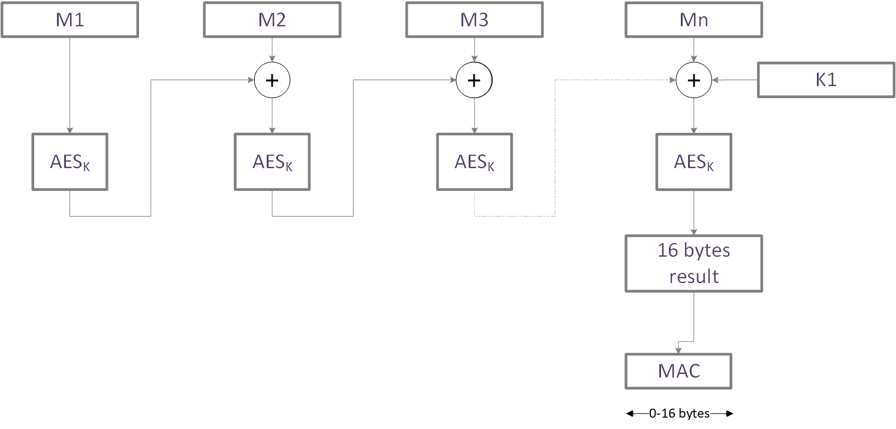
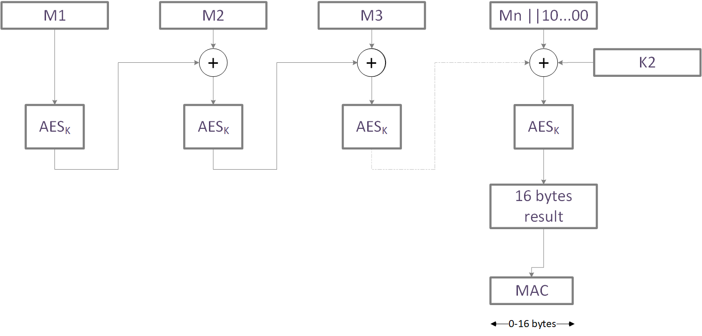

AES CMAC
Bibliography
[1] NIST SP 800-38B: Recommendation for Block Cipher Modes of Operation: The CMAC Mode for Authentication
NIST SP800-38B: https://nvlpubs.nist.gov/nistpubs/Legacy/SP/nistspecialpublication800-38b.pdf
Goal of the document
The goal of this chapter is to describe the functionality of the library AES CMAC.
- This chapter:
describes the API, including the prototype, the parameters, the error codes etc…
provides the performances of the function.
The CMAC authentication mode
This library implements AES CMAC algorithm according to the specification NIST SP 800-38B[1].
AES CMAC is a message authentication code (MAC) algorithm that is based on AES.
As a MAC algorithm , CMAC is used to ensure the data origin and the data integrity.
AES CMAC does not encrypt\decrypt data.
Warning
AES CMAC should not be confused with AES CBC_MAC which uses the last result of AES_CBC to produce a MAC. AES CBC_MAC is insecure to ensure data integrity.
Two flavors of CMAC exit depending if the message size is a multiple of 16 bytes or not.
- When the message size is a multiple of 16 bytes:
The first block of 16 bytes is encrypted.
Each following block of 16 bytes is XORed with the previous AES result, before being encrypted itself.
The latest block is XORed with K1, and the previous AES result. It is then encrypted.
The MAC is then composed of the first l bytes of the previous result, where l is the desired MAC length.
Next figure shows the first flavor.
- When the message size is NOT a multiple of 16 bytes:
The first block of 16 bytes is encrypted.
Each following block of 16 bytes is XORed with the previous AES result, before being encrypted itself.
The latest block is padded with 0x10 and as many 0x00 bytes necessary to complete the block,
The intermediate result is XORed with K2 and previous AES result and then encrypted.
The MAC is then composed of the first l bytes of the previous result, where l is the desired MAC length.
Next figure shows the second flavor.
- Remarks:
K1 and K2 are derived from the master key K. The way they are derived is described in [1].
The message to MAC can be of any size. It is not necessarily a multiple of 16 bytes.
Underlying AES
- EM9305 embeds:
A software AES that manages the key sizes (128, 192 and 256).
A hardware AES that only manages 128-bit key size.
- The hardware AES can be invoked:
either with a key given explicitly
or with a key stored in a key container. In this case, the ID of the key is provided to the AES.
AES CMAC APIs interface both the AES Software and the AES hardware. When AES hardware is used, the APIs allow the use of an explicit key or the use of a key container.
Next figure shows which AES is executed, according to the various options.

APIs
Enumerations
AES Type
The underlying algorithm is chosen with the following macro: AES type
AES Key size in bits
The key size is chosen with the macro defined here: AES Key size in bits
Explicit key or key container
The choice between a key provided by value or implicitly with a key container ID is given by the following enumeration:
Error status
The API error status is given by:
-
enum AES_CMAC_Lib_error_t
Error status words for AES CMAC mode.
Values:
-
enumerator AES_CMAC_SUCCESS
AES CMAC computation successful.
-
enumerator AES_CMAC_INCOMPATIBLE_PARAMETER
Incompatible key size with key type and AES type.
-
enumerator AES_CMAC_INCORRECT_LENGTH
Incorrect length- MAC length should be in [0..16].
-
enumerator AES_CMAC_INCORRECT_KEY_LENGTH
Key length is incorrect.It shall be 128,192 or 256.
-
enumerator AES_CMAC_INCORRECT_RESULT_POINTER
Result pointer is null.
-
enumerator AES_CMAC_SUCCESS
Context
A context that contains the key size, the underlying AES , the key type , the key value \ key ID and the data accumulated up to now is defined as follows.
-
struct AES_CMAC_CTX
AES CMAC context
Public Members
-
AES_key_size_bit_t keySize
Key size.
-
AES_Select_t AESType
AES Type: Either AES_HARDWARE or AES_SOFTWARE.
-
AES_CMAC_KeyType_t keyType
Key type. Either KEY_ID or KEY_VALUE
-
uint8_t key[32]
The key value or the key index
-
uint8_t buffer[16]
Buffer to accumulate data
-
uint8_t nbByteInBuffer
Number of bytes in the accumulation buffer
-
uint8_t isNullMessage
Special tag to indicate if the message is null
-
AES_key_size_bit_t keySize
AES_CMAC_InitCtx
Goal of the function
This function initializes an AES context with the different options: key size, underlying AES and key type. It also sets the key and the initial counter value.
Prototype
-
AES_CMAC_Lib_error_t AES_CMAC_InitCtx(AES_CMAC_CTX *ctx, AES_Select_t AESSelect, AES_CMAC_KeyType_t keyType, AES_key_size_bit_t keySize, uint8_t *key)
Initialize an AES CMAC context. Choose the underlying AES, the key type and key size. Set the key value. Set the initial value.
Note
When using key container, the key must be typed either AES_HW_ENC_DEC or AES_HW_ENC_ONLY. This is due to the fact, that AES always encrypts the blocks to compute a CMAC.
- Parameters
ctx – [out] AES CMAC context to set
AESSelect – [in] The underlying AES. Either AES_HARDWARE or AES_SOFTWARE
keyType – [in] The type of the key: either KEY_VALUE for explicitly key value or KEY_ID for a key in a key container
keySize – [in] The size of the key in bits : AES_KEY_128,AES_KEY_192 or AES_KEY_256
key – [in] The key value(16 to 32 bytes) or the key ID (first byte)
- Return values
AES_CMAC_SUCCESS – No error occurred
AES_CMAC_INCORRECT_KEY_LENGTH – Incorrect key length
AES_CMAC_INCOMPATIBLE_PARAMETER – Hardware/software selection is not compatible with the key length
- Returns
Error code
Parameters
Ctx : The AES CMAC context to initialize
AESSelect: Select the AES hardware or the AES software
keyType : Select if the key is given explicitly by value or if it refers by its key container ID.
keySize : Key size in bits
- key:
When the key is given explicitly: 16, 24 or 32 bytes representing the key value.
When the key is given by its ID: 1 byte with the key ID.
Return values
Type |
Description |
OK \ NOK |
|---|---|---|
AES_CMAC_SUCCESS |
Initialization successful |
OK |
AES_CMAC_INCORRECT_KEY_LENGTH |
Incorrect key length |
NOK |
AES_CMAC_INCOMPATIBLE_PARAMETER |
Hardware AES is not compatible with this key length |
NOK |
AES_CMAC_Compute
Goal of the function
Accumulate data for the MAC computation and compute intermediate MAC.
Prototype
-
AES_CMAC_Lib_error_t AES_CMAC_Compute(AES_CMAC_CTX *ctx, uint8_t *data, uint32_t sizeInBytes)
Accumulate data for the MAC computation and compute intermediate MAC.
- Parameters
ctx – [inout] AES CMAC context
data – [in] Pointer on data to MAC. It should be sizeInBytes long
sizeInBytes – [in] Size of the data. It can be any size.
- Return values
AES_CMAC_SUCCESS – No error occurred
AES_CMAC_INCORRECT_KEY_LENGTH – Incorrect key length
AES_CMAC_INCOMPATIBLE_PARAMETER – Hardware/software selection is not compatible with the key length
- Returns
Error code
Parameters
Ctx : The AES CMAC context
data: Message to MAC
sizeInBytes: Size of the data to deal with during this call.
Note
Granularity of CMAC mode is 1 byte. There is no constraint on the size of the message to MAC.
Several calls of AES_CMAC_Compute can be performed consecutively.
In addition, several AES CMAC computations with different contexts can be interlaced.
When accumulating data shorter than 16 bytes, it may be possible that the buffer to encrypt is not yet full. In that case, the execution time of this function will be faster.
Warning
When using a key container, the key must be either of type AES_HW_ENC_DEC (encryption and decryption) or type AES_ENC_ONLY(Encryption). The key must not have been invalidated. In case those conditions are not respected, this function returns an error of type AES_Error_t.
Return values
Type |
Description |
OK \ NOK |
|---|---|---|
AES_CMAC_SUCCESS |
Successful intermediate computation |
OK |
AES_CMAC_GetMAC
Goal of the function
This function finalizes the MAC computation.
Prototype
-
AES_CMAC_Lib_error_t AES_CMAC_GetMAC(AES_CMAC_CTX *ctx, uint8_t *MAC, uint8_t sizeMACInByte)
return the sizeMACInByte MAC
- Parameters
ctx – [inout] AES CMAC context
sizeMACInByte – [in] MAC size required . It should be in [0..16]
MAC – [out] MAC value( sizeMACInByte byte long)
- Return values
AES_CMAC_SUCCESS – No error occurred
AES_CMAC_INCORRECT_RESULT_POINTER – Result pointer not initialized.
AES_CMAC_INCORRECT_LENGTH – MAC length should be lower or equal to 16.
- Returns
Error code
Parameters
Ctx: The AES CMAC context.
MAC: Pointer on the MAC buffer.
sizeMACInByte: Size of the desired MAC. It must be in the range[0..16].
Warning
When using a key container, the key must be either of type AES_HW_ENC_DEC (encryption and decryption) or type AES_ENC_ONLY(Encryption). AES_DEC_ONLY(Decryption) would not work since the AES CMAC mode only uses the AES core algorithm in encryption mode. The key must not have been invalidated. In case those conditions are not respected, this function returns an error of type AES_Error_t.
Return values
Type |
Description |
OK \ NOK |
|---|---|---|
AES_CMAC_SUCCESS |
Successful encryption |
OK |
AES_CMAC_INCORRECT_RESULT_POINTER |
MAC pointer is not initialized |
NOK |
AES_CMAC_INCORRECT_LENGTH |
The size of the MAC should be smaller or equal to 16 |
NOK |
Performances
Library location
The lib is located in ROM.
Code size
Size in bytes |
|---|
604 bytes |
RAM
Size in bytes |
|---|
No usage of global RAM except the AES_CMAC_CTX |
Stack
Size in bytes |
|---|
128 bytes |
Execution time
The AES_CMAC_InitCtx function time is rather constant and almost independent on the key size.
Function |
Underlying algorithm |
Key size in bits |
Time in us at 48Mhz |
|---|---|---|---|
AES_CMAC_InitCtx |
Any |
Any |
7 |
The execution time AES_CMAC_Compute clearly depends on the size of the message, the key size and the underlying algorithm. Next table shows the time per complete 16-byte block. Because data are accumulated and processed when the accumulation buffer is full, it may happen that no AES is performed during the call. It may also happen that an AES execution is performed while only 1 byte of data is provided. For a complete CMAC computation, AES_CMAC_Compute will perform (nbByte/16) AES executions or ((nbByte/16)-1) AES executions. The last block is always processed by AES_CMAC_GetMAC.
Function |
Underlying algorithm |
Key size in bits |
Time in us at 48Mhz |
|---|---|---|---|
AES_CMAC_Compute |
AES Hardware |
128 |
12 |
AES_CMAC_Compute |
AES Software |
128 |
117 |
AES_CMAC_Compute |
AES Software |
192 |
143 |
AES_CMAC_Compute |
AES Software |
256 |
161 |
The AES_CMAC_GetMAC always involves 2 AES computations. One for the computation of K1 or K2 and one to complete the MAC computation.
Function |
Underlying algorithm |
Key size in bits |
Time in us at 48Mhz |
|---|---|---|---|
AES_CMAC_GetMAC |
AES Hardware |
128 |
26 |
AES_CMAC_GetMAC |
AES Software |
128 |
236 |
AES_CMAC_GetMAC |
AES Software |
192 |
289 |
AES_CMAC_GetMAC |
AES Software |
256 |
325 |
Dependencies
AES CMAC lib depends on the AES lib.
Example
- Next code shows basic examples:
using the AES hardware with an explicit key
using the AES hardware with key stored in key containers
using the AES software
////////////////////////////////////////////////////////////////////////////////
///
/// @file ExampleAES_CMAC.c
///
///
/// @brief Example of use of AES CMAC
////////////////////////////////////////////////////////////////////////////////
////////////////////////////////////////////////////////////////////////////////
///
////////////////////////////////////////////////////////////////////////////////
///
/// @copyright Copyright (C) 2022 EM Microelectronic
/// @cond
///
/// All rights reserved.
///
/// Redistribution and use in source and binary forms, with or without
/// modification, are permitted provided that the following conditions are met:
/// 1. Redistributions of source code must retain the above copyright notice,
/// this list of conditions and the following disclaimer.
/// 2. Redistributions in binary form must reproduce the above copyright notice,
/// this list of conditions and the following disclaimer in the documentation
/// and/or other materials provided with the distribution.
///
////////////////////////////////////////////////////////////////////////////////
///
/// THIS SOFTWARE IS PROVIDED BY THE COPYRIGHT HOLDERS AND CONTRIBUTORS "AS IS"
/// AND ANY EXPRESS OR IMPLIED WARRANTIES, INCLUDING, BUT NOT LIMITED TO, THE
/// IMPLIED WARRANTIES OF MERCHANTABILITY AND FITNESS FOR A PARTICULAR PURPOSE
/// ARE DISCLAIMED. IN NO EVENT SHALL THE COPYRIGHT HOLDER OR CONTRIBUTORS BE
/// LIABLE FOR ANY DIRECT, INDIRECT, INCIDENTAL, SPECIAL, EXEMPLARY, OR
/// CONSEQUENTIAL DAMAGES (INCLUDING, BUT NOT LIMITED TO, PROCUREMENT OF
/// SUBSTITUTE GOODS OR SERVICES; LOSS OF USE, DATA, OR PROFITS; OR BUSINESS
/// INTERRUPTION) HOWEVER CAUSED AND ON ANY THEORY OF LIABILITY, WHETHER IN
/// CONTRACT, STRICT LIABILITY, OR TORT (INCLUDING NEGLIGENCE OR OTHERWISE)
/// ARISING IN ANY WAY OUT OF THE USE OF THIS SOFTWARE, EVEN IF ADVISED OF THE
/// POSSIBILITY OF SUCH DAMAGE.
/// @endcond
////////////////////////////////////////////////////////////////////////////////
#include <stdint.h>
#include "AES.h"
#include "hw_aes.h"
#include "AES_CMAC.h"
uint8_t ExampleAES_CMAC(void) {
uint8_t key[AES_BYTE_SIZE_KEY128] = { 0xc9, 0x40, 0x8a, 0x8b, 0x16, 0x3f,
0x1e, 0x60, 0x28, 0x94, 0xb3, 0x23, 0x9c, 0x3f, 0xdb, 0x6d };
uint8_t message[37] = { 0xae, 0x10, 0x09, 0xf0, 0x36, 0x26, 0xfc, 0xb5,
0x4b, 0xf9, 0x8c, 0x32, 0x91, 0x2f, 0x0f, 0x70, 0xbd, 0x39, 0x8c,
0x70, 0x9c, 0x3e, 0xd8, 0xbf, 0x57, 0x54, 0xfe, 0x4b, 0xf5, 0xf6,
0xe4, 0x75, 0x21, 0xb3, 0x2c, 0x67, 0x2e };
uint8_t mac[15] = { 0x58, 0xc3, 0xc8, 0x04, 0xc2, 0x98, 0x5d, 0xf4, 0x7c,
0x5c, 0x4b, 0xfc, 0xfe, 0x88, 0x37 };
uint8_t key256[AES_BYTE_SIZE_KEY256] = { 0x6c, 0x0b, 0x2c, 0x3c, 0x5f, 0xec,
0x96, 0x1a, 0xb8, 0x4e, 0x68, 0xf5, 0x6c, 0xa1, 0x66, 0x58, 0x6e,
0x59, 0x42, 0xfb, 0x25, 0x94, 0xb1, 0x8a, 0x1d, 0xfd, 0xc4, 0xa8,
0xfd, 0xf0, 0x76, 0x34 };
uint8_t message256[10] = { 0xf0, 0x8f, 0x89, 0x08, 0x75, 0xe1, 0x39, 0x48,
0x04, 0x89 };
uint8_t mac256[5] = { 0xb4, 0x9c, 0x22, 0x39, 0xe7 };
AES_CMAC_CTX Ctx;
AES_CMAC_Lib_error_t sw;
uint8_t error = 0;
uint8_t i;
uint8_t result[36];
uint8_t keyId[1];
//-----------------------------------------------------------------------------
// First example
//
// AES CMAC with a 128-bit key
//
// We use the AES hardware but not the crypto containers.
//
// We compute the MAC in one step. The required MAC size is 15 bytes.
//-----------------------------------------------------------------------------
//initialize the context
sw = AES_CMAC_InitCtx(&Ctx, AES_HARDWARE, AES_CMAC_KEY_VALUE, AES_KEY_128,
key);
if (sw != AES_CMAC_SUCCESS)
error++;
//compute the MAC
sw = AES_CMAC_Compute(&Ctx, message, 37);
if (sw != AES_CMAC_SUCCESS)
error++;
//get the 15 bytes MAC
sw = AES_CMAC_GetMAC(&Ctx, result, 15);
//check the result
for (i = 0; i < 15; i++) {
if (result[i] != mac[i])
error++;
}
//-----------------------------------------------------------------------------
// Second example
//
// AES CMAC with a 128-bit key
//
// We use the AES software
//
// We compute the MAC in several steps. 15 bytes first, then 17 , then 5 bytes
//
// The required MAC size is 4 bytes.
//-----------------------------------------------------------------------------
//initialize the context
sw = AES_CMAC_InitCtx(&Ctx, AES_SOFTWARE, AES_CMAC_KEY_VALUE, AES_KEY_128,
key);
if (sw != AES_CMAC_SUCCESS)
error++;
//compute the MAC on
sw = AES_CMAC_Compute(&Ctx, message, 15);
if (sw != AES_CMAC_SUCCESS)
error++;
sw = AES_CMAC_Compute(&Ctx, message + 15, 17);
if (sw != AES_CMAC_SUCCESS)
error++;
sw = AES_CMAC_Compute(&Ctx, message + 32, 5);
if (sw != AES_CMAC_SUCCESS)
error++;
//get the 4 bytes MAC
sw = AES_CMAC_GetMAC(&Ctx, result, 4);
//check the result
for (i = 0; i < 4; i++) {
if (result[i] != mac[i])
error++;
}
//-----------------------------------------------------------------------------
// Third example
//
// AES CMAC with a 128-bit key
//
// We use the AES hardware and the crypto container
//
// We compute the MAC in one step. The required MAC size is 6 bytes
//-----------------------------------------------------------------------------
//A priori the key has been written previously in a key container.
//Here we write the key in container 0x09
AES_SetKeyContainer((uint32_t*) key, 0x09, AES_HW_ENC_ONLY);
keyId[0] = 0x09;
//initialize the context
sw = AES_CMAC_InitCtx(&Ctx, AES_HARDWARE, AES_CMAC_KEY_ID, AES_KEY_128,
keyId);
//compute the MAC
sw = AES_CMAC_Compute(&Ctx, message, 37);
if (sw != AES_CMAC_SUCCESS)
error++;
//get the 6 bytes MAC
sw = AES_CMAC_GetMAC(&Ctx, result, 6);
//check the result
for (i = 0; i < 6; i++) {
if (result[i] != mac[i])
error++;
}
//-----------------------------------------------------------------------------
// fourth example
//
// AES CMAC with a 256-bit key
//
// We use the AES software
//
// We compute the MAC in one step. The required MAC size is 5 bytes.
//-----------------------------------------------------------------------------
//initialize the context
sw = AES_CMAC_InitCtx(&Ctx, AES_SOFTWARE, AES_CMAC_KEY_VALUE, AES_KEY_256,
key256);
if (sw != AES_CMAC_SUCCESS)
error++;
//compute the MAC
sw = AES_CMAC_Compute(&Ctx, message256, 10);
if (sw != AES_CMAC_SUCCESS)
error++;
//get the 5 bytes MAC
sw = AES_CMAC_GetMAC(&Ctx, result, 5);
//check the result
for (i = 0; i < 5; i++) {
if (result[i] != mac256[i])
error++;
}
if (error)
return (1);
else
return (0);
}